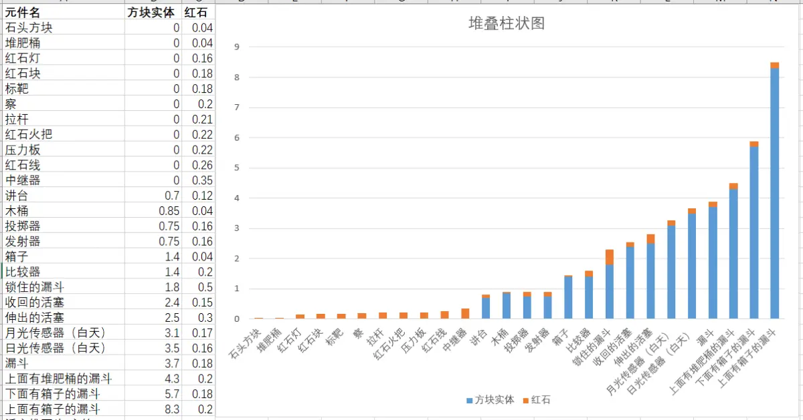
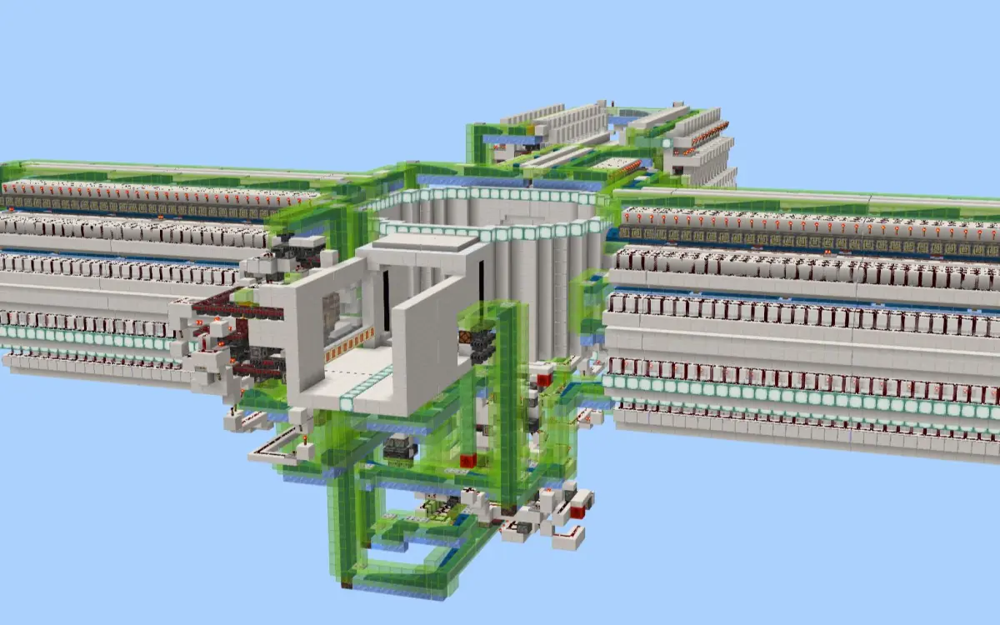
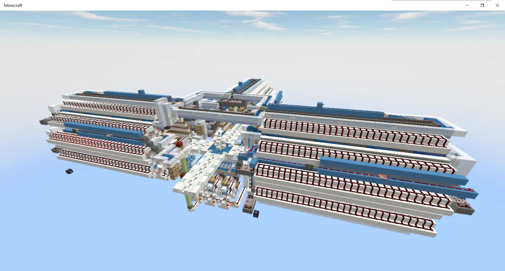
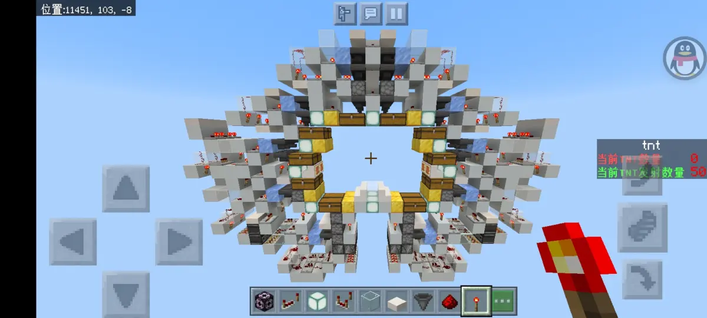
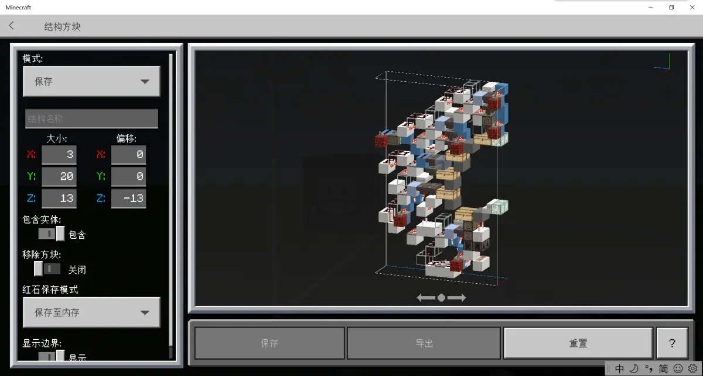
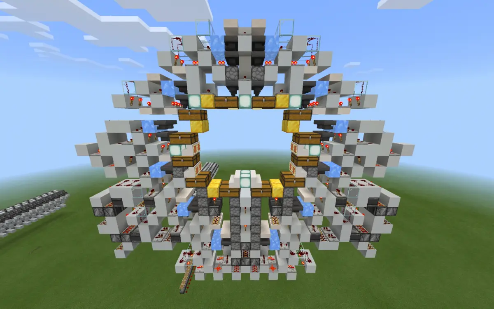
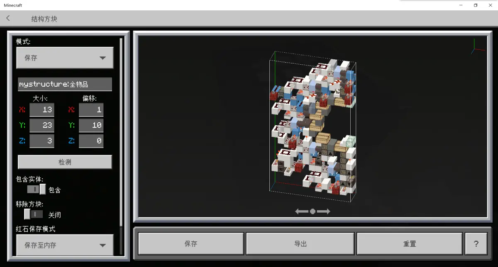
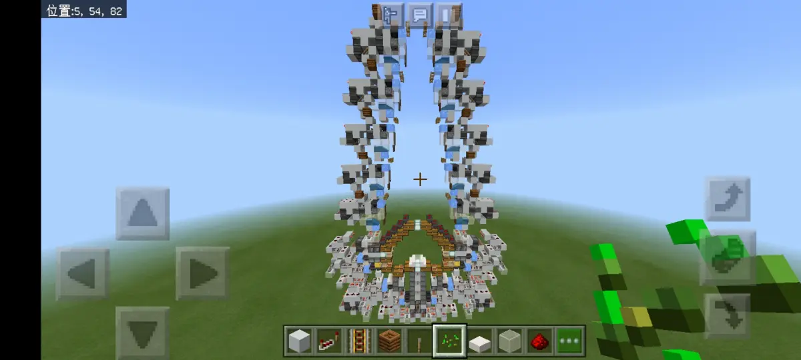
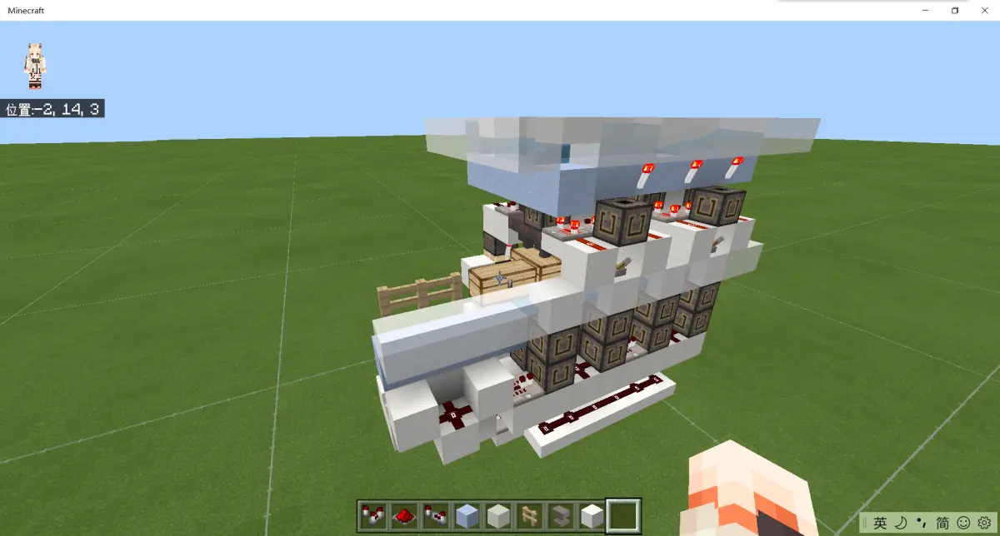
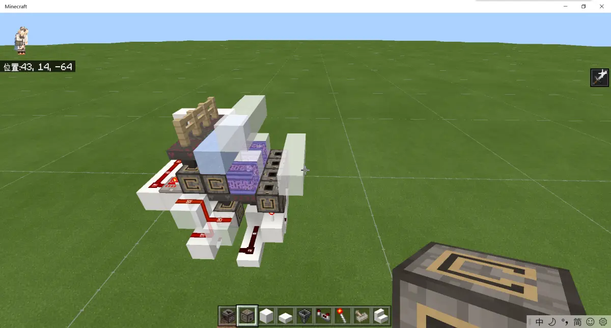

MCBE 浅谈全物品 ep.6 新式传统全物品归纳
写在前面
本文主要内容是基于锁漏斗全物品单片出现之后的设计。如有缺漏或建议补充的，欢迎在评论区留言
本文所有 粉色字 均为链接，为对本文内容的补充
本文是由我和天火的服务器成员 @Maple_枫溪 共同撰写的。由我负责主要内容，@Maple_枫溪 负责技术指导
（这里打一波广告，天火服务器交流群：1029028772）
目录
6、新式传统全物品归纳
6.1、基于卡顿的简述
6.2、单片的发展
6.2.1、锁漏斗
6.2.2、多箱
6.2.3、降低填充物数量
6.2.4、拓展功能
6.3、水道优化
6.3.1、拆分水道
6.3.2、缩短水道
6.3.3、转角优化
6.4、动态容量
6.4.1、基于多物品的动态容量
6.4.2、基于新式单片的动态容量
6.5、布局设计
6.5.1、降低加载范围
6.5.2、轻量化
6.6、部分全物品优秀作品赏析
6.6.1、完整的全物品设计方案
6.6.2、全物品单片方案
6.6.3、其他全物品部件
6、新式传统全物品归纳
------------------------------
6.1、基于卡顿的简述
这里参考 @bWFuanVzYWth 的 一张图

经过可视化处理后可以很明显地看出漏斗是 非活塞相关里 卡顿最高的方块。而漏斗相关的几个选项中，闭锁的漏斗卡顿显著低于解锁的漏斗，而漏斗的上方或下方添加容器都会提升漏斗的卡顿。那么锁漏斗化势在必行
另外，由于比较器是方块实体，建议在非必要的情况下尽量用非方块实体的中继器替代比较器
------------------------------
6.2、单片发展
6.2.1、锁漏斗
如上文所说，锁漏斗是一种有效的降低静态卡顿的方案。于是锁漏斗单片成为了当前的一种需求。但解锁方案成为了一种相对不成熟的问题
目前解锁方案共有三种，分别为 全部解锁、动态解锁、拆分水道解锁
全部解锁是指物品流进全物品水道内将漏斗全部解锁，直至物品结束循环后将漏斗重新闭锁
动态解锁是指将单片内水道拆分为独立检测单元，当物品流经水道时解锁，全部流出后进行闭锁
拆分水道解锁是指将单片内水道进行拆分为独立水道，当该水道物品时进行解锁，无物品时闭锁
总的来说，锁漏斗设计已经成为了一种传统全物品的发展趋势。相信随着更多人的深入研究，会出现更加成熟的系统设计
6.2.2、多箱
由于mc的物品数量在爆炸式发展，传统全物品的五箱已经达到了单侧32长（1.16常见设计），物品的取用会变得越来越不方便，需要走更长的路。这一点对于全物品的使用非常不友好，且意味着全物品需要加载更多的区块。在四箱发展到五箱的步伐下再迈进一步，可以得到六箱全物品单片设计。在以后有更加丰富的红石原件的情况下，是否会出现七箱或更多设计呢？
6.2.3、降低填充物数量
过往的全物品单片设计普遍采用 漏斗——投掷器 分类模块设计，这种设计需要将投掷器全部填充满。如果采用 双漏斗分类——投掷器 设计，可以将填充物数量有效降低
6.2.4、拓展功能
基于不同需求，拥有其他拓展功能的全物品单片需求已经提上日程
如销毁单片、分类销毁单片、垃圾箱存储、多水道合一存储、分类提取物品单片
------------------------------
6.3、水道优化
水道占据了物品在全物品内时间的大头，那么水道的优化是重中之重
6.3.1、拆分水道
三向全物品，传统的五箱单片，有效水道为3x10=30条。而随着有效水道数量的增多，需要更多的无效水道将物品从一条有效水道送往另一条有效水道，这必然会促使无效水道的长度增加
所以随着单片箱数的增加，将这30条水道拆分势在必行。目前有一种方案是将一条水道的物品通过多物品进行筛选，然后送往对应水道
6.3.2、缩短水道
减少箱数可以有效降低无效水道长度，但得不偿失
如果在拆分水道的方案下，增加单片箱数，可以有效降低每条水道的长度
如32片五箱全物品，共计320箱。而换成六箱的话只需要27片，每条水道缩短了五格
6.3.3、转角优化
在mc的转弯都是90度，一次转弯会损失之前的所有速度并重新加速。所以可以借助台阶、炼药台等完成转角加速
------------------------------
6.4、动态容量
对于少量稀有物品来说，大箱子的容量有些冗余。而对于易量产的物品来说，一大箱子的容量跟不上回收速度。所以相对灵活的容量是必须要解决的问题
6.4.1、基于多物品的动态容量
多物品存储将多种物品基于物品数量本身的需求灵活分配容量，那么全物品如何利用这种优势呢？
物品在主控完成初步处理后可以输入进多物品中，由多物品分发给各个模块或者各条水道。由于多物品目前只有伪8gt的分类效率，所以需要多台多物品或者临时分类单元来分担从主控输入的物品流
而多物品对应的水道，适用于大箱储量的物品可以布置大箱子分类单元，而不适用大箱储量的可以合并至一到两个垃圾箱。由于垃圾箱的设计，在同等体积下可以冗余出一些分类单元，用于一些大箱子不能满足收纳的情况。在此之上，为了防止一些物品冗余导致污染垃圾箱内的少量多种物品，可以采用分类销毁单片
6.4.2、基于新式单片
正常来说，五条水道对应五种物品、五个容器。倘若这五种物品的储量都不满足一个大箱子呢？那么是否可以设计一种将五种物品分类并存入同一个容器的单片？
------------------------------
6.5、布局设计
6.5.1、降低加载范围
缩短水道可以有效降低加载范围
全物品的加载范围是水道的范围，物品需要在加载范围内完成整理并分类，以保证全物品可以在玩家不加载的情况下离线工作
而缩短水道可以让划定的常加载范围缩小。由于常加载范围必须是整区块，所以每一个常加载范围都相当大
以上面的五箱和六箱为例，五箱为64格长+主控大小，六箱为54格长+主控大小，在不考虑区块边界导致的其他问题下，五箱长度必定为五区块长或以上，而六箱可能为四区块长或以上
6.5.2、轻量化
基于多物品的分类仓库经过拓展可以得到全物品的大部分主要功能，可以处理大宗物品以及适量的物品。且基于多物品，可以获得更多的功能，如自适应仓储分配、满箱警告、同类物品归纳等
常见的 轻量化全物品 包括：大宗物品分类、多种物品分类 这两个部件
------------------------------
6.6、部分优秀全物品作品赏析
以下图片仅为预览，不保证能完全还原各个设计
6.6.1、完整的全物品设计方案
Whale-fallen 《全物品终版展示》：

【MCBE】全物品终版展示 B 站视频 »叼叼的名字 《第二代传统全物品》：
Padishah19 《全物品空间站》：
【𝙂𝙖𝙡𝙖𝙭𝙮】全物品空间站 [MCBE] B 站视频 »Padishah19 《基于 8gt 多物品分类的轻量全物品》：
基于 8gt 多物品分类的轻量全物品 [MCBE] B 站视频 »Maple_枫溪 《动态解锁全物品》

存档群内自取
6.6.2、全物品单片方案
Jayden_233 《五箱漏斗全锁单片》

叼叼的名字 《五箱漏斗全锁单片》

Jayden_233 《六箱漏斗全锁单片》

叼叼的名字 《六箱漏斗全锁单片》

Jayden_233 《九箱漏斗全锁单片》

6.6.3、其他全物品部件
叼叼的名字 《二宽预分类》

叼叼的名字 《潜影盒分离》

写在最后
简单补了一下近期出现的新设计，也简单云了一下未来的发展思路
斗胆把自己的一些屑作和各位佬的东西放在了一起 _(:з」∠)_
感觉这篇文章比之前的水
恰逢除夕之时，在此恭祝各位
新年快乐 ✿ヽ(°▽°)ノ✿
新的一年linlin变成妹妹了吗
祝linlin在新的一年变成妹妹吧
（封面来源：Maple_枫溪 《动态解锁全物品》）